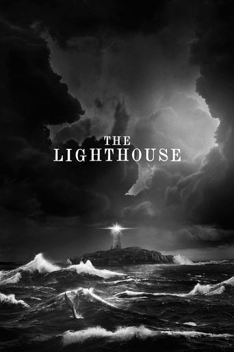
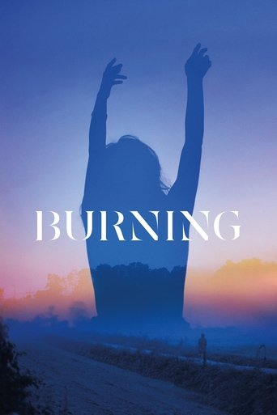
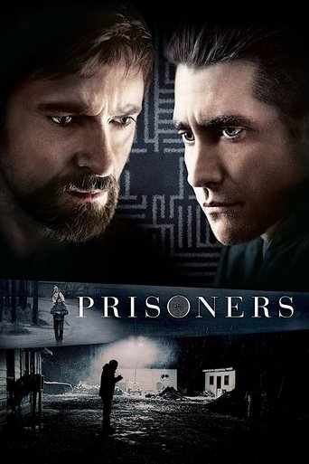

Today a take stops at 500 characters: the box is three lines growing to five, and an amber 412/500 appears from 400. Proposed: 2,000, the box grows to eight lines before it scrolls, and the count appears only from 1,800 (1,842 / 2,000), so a normal take never sees a number. A long take is clamped where takes are listed, 4 lines in the film's Discussion (Read more opens it in place) and 3 lines in Lately (Read more opens the post, where the take is in full). Spoiler takes keep today's bar until tapped, whatever their length. iPhone at 390; the web follows the same rules. The review text is a stand-in written for this mock, and the people are stand-ins.
1 · Now
The take step after rating (WatchedWhen.swift), typing. At the cap the last keystroke is refused mid-word ("whi"), the box is five lines and scrolls, 500/500 in amber.

2 · Proposed composer
Up to 2,000. The box grows from three lines to eight, then scrolls inside (the thumb at the right). No number until 1,800, then 1,842 / 2,000 in amber; at 2,000 it stops as today. The draft is set in Newsreader, as it will read posted. The chips and headline scroll up behind the grab.
3 · The film's Discussion
A take over four lines stops at four with an ellipsis and Read more under it, in the Reply button's quiet style; its tap area is 44 tall (dashed here only). Short takes and the spoiler bar are as today.
3b · After Read more
The take opens in place, the list scrolls as usual, and Show less sits at its end so a long one can be put away without scrolling back. Reactions and Reply follow the full text.
4 · Lately
Lately keeps its three lines (FeedTakeLine clamp). A cut take gets Read more under it; it opens the post's drawer, where the take is in full (5). A tap anywhere else on the post still does the same, as today.

4
3.55 · The full take
Lately's post drawer, opened at full height when the take is long. The take in full, paragraphs kept; it scrolls, and the action bar and comments follow the take as today. The comment field stays pinned.
Recommendation: 2,000 characters for a take (about 330 words, four short paragraphs). That is a real review on a phone: about 45 lines in the post drawer, one long scroll. 3,000 is about 70 lines, three screens, more than a social surface reads, and buys little the 2,000 cap does not.
text.slice(0, 600). Raise the take limit without raising this and characters 601 onward of an Everyone take post unchecked. The slice must move with the limit (2,000, or TAKE_MAX). The link regex already runs on the whole text.max_tokens: 20, a 12 s timeout, the fast model (FAST_MODEL, Haiku class), a daily cap of 1,000 checks (DAILY_TAKE_CHECKS), failing closed.| Limit | Take, at most | Input per check, at most | vs today |
|---|---|---|---|
| 500 (today) | ~125 tokens | ~300 tokens | 1× |
| 2,000 recommended | ~500 tokens | ~670 tokens | ~2.3× |
| 3,000 | ~750 tokens | ~920 tokens | ~3× |
Estimates: the prompt is ~170 tokens, English ~4 characters a token. That is the worst case; most takes stay short, so the average check moves far less. Latency is well inside 12 s either way.
film_takes.body check (char_length(body) between 1 and 500) needs a migration. Replies (film_take_replies), group, room and post comments stay 500.TAKE_MAX = 500 in lib/film-takes.ts (clean() slices to it).MAX (shared with replies, so split it).